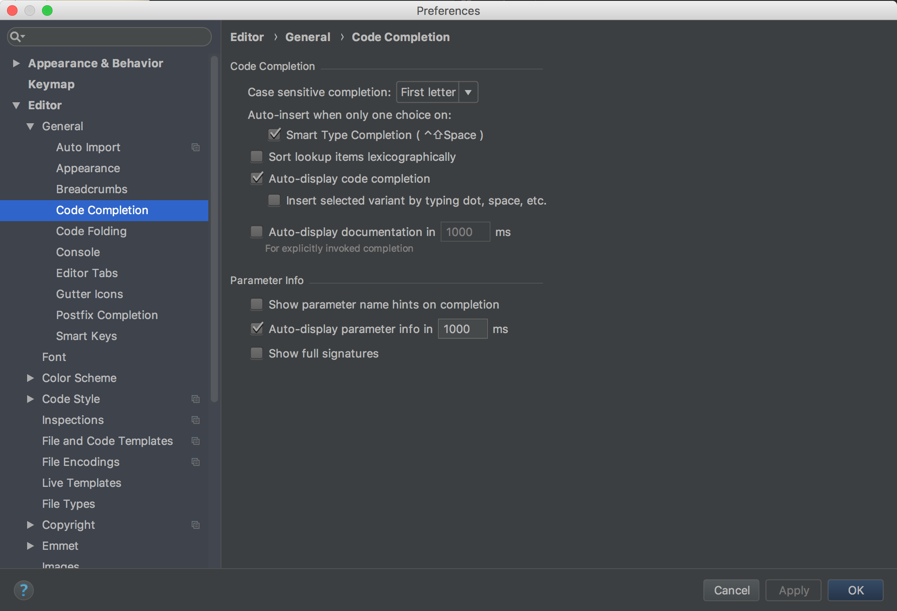
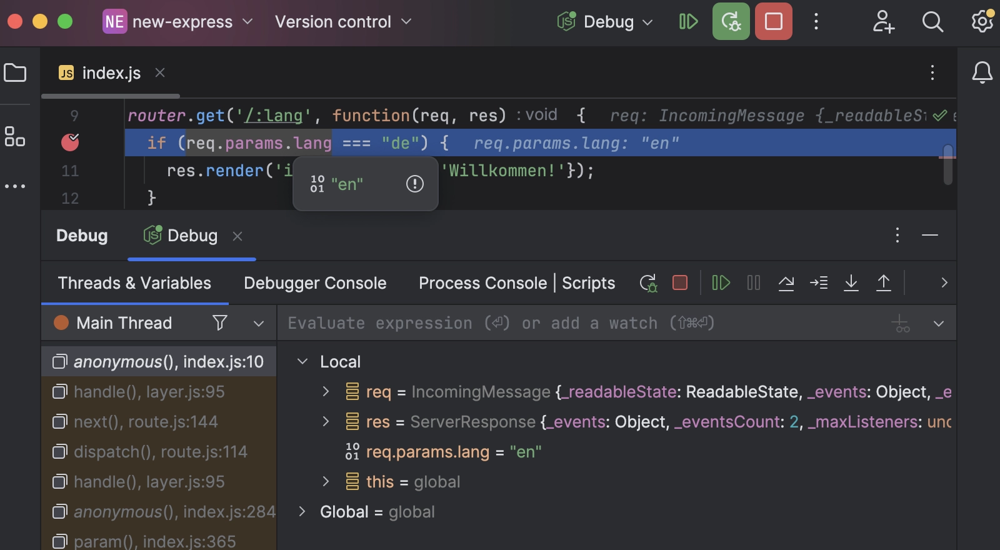
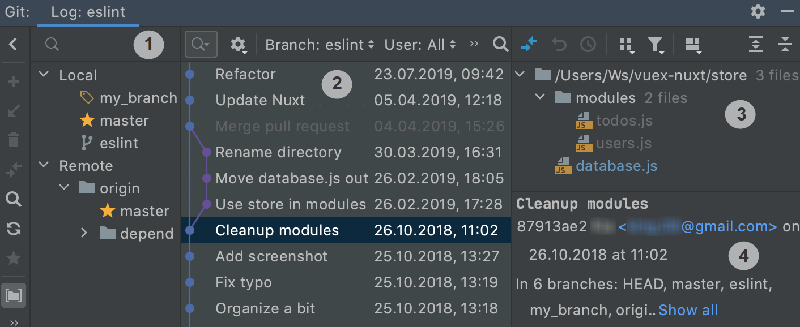
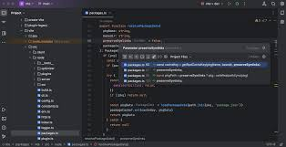

WebStorm – CASE vahend
JetBrainsi professionaalne veebiarenduse IDE
Programmi nimi
WebStorm (JetBrains)
Ajalugu
WebStorm on CASE-tüüpi arenduskeskkond, mille arendas tarkvarafirma JetBrains. Esimene versioon avaldati 2010. aastal.
Tööriist loodi eesmärgiga muuta JavaScripti ja veebiarendus kiiremaks läbi intelligentse koodianalüüsi, automaatsete soovituste ja arendustööriistade integratsiooni. Arendust jätkatakse aktiivselt ka tänapäeval.
Arendus
Programmi arendus ei ole lõppenud — JetBrains arendab WebStormi aktiivselt edasi ka tänapäeval, lisades uusi funktsioone, parandades jõudlust ning toetades uusi JavaScript. raamistikke ja arendustööriistu. Tänapäeval kasutatakse WebStormi nii õppimisel kui ka professionaalsetes tarkvaraarendusprojektides üle maailma.
Peamised funktsioonid
Smart Code Completion
Automaatne koodisoovitus ja vigade tuvastamine.
Debugging
Sisseehitatud debugger programmeerimisvigade leidmiseks.
Git integratsioon
Commit ja branchide haldus otse IDE sees.
Framework tugi
React, Vue, Angular ja Node.js automaatne tugi.
